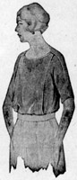
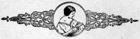

1926—The New-Way Course in Fashionable Clothes-Making
Lesson 32—Kimonas, Bathrobes, Boudoir Caps
Kimonas
The kimona is at once a practical, useful garment and an attractive bit of wearing apparel. It is practical because it is a comfortable, easy-to-slip-into garment. It is attractive because of its gay colors and pretty styles.
Of course, there are many different types of kimonas—one prettier than the other. There are simple kimonas with nothing more pretentious than a bit of ribbon at the neck for trimming. There are elaborate kimonas gay and with many ruffles and frills and embroidery. There was a time when two kimonas were considered a needless extravagance and luxury—but today, when every woman can make beautiful kimonas quickly and easily, and for just what the material alone costs—why, even a kimona for every day of the week would not be extravagant!
Kimonas may be made of silks, crepes (cotton and silk crepes), French flannel or any other soft material that appeals to you and is suitable for kimona wear. Taffeta is being used also, although we do not particularly recommend this material except for breakfast coats.
You will require twice the length of the measure from your shoulder to the floor of material for the making of the kimona, and in addition to this you will need material for whatever trimming you use. You will find that the prettiest possible trimming for kimonas is narrow ruffling around the edges of the garment.
- Cut the kimona exactly as you cut your kimona nightgown. Cut the neck any desired shape, and split the kimona down from the neck to the bottom.
- Baste together for French seams and fit. Adjust for the correct length.
- With the No. 1 hemmer on the sewing machine make a small hem. It will be three-eighths of an inch in width around the entire garment. Of course, if you have no machine, you will have to do this hemming by hand.
- Use a very narrow belt with this kimona. Sometimes a casing encircles the waist through which is drawn a loose elastic.
- An interesting way to trim this kimona is to ruffle ribbon exactly through the center and then stitch it, through this line of center stitching, on the line of stitching which marks the hem-line at the bottom. It gives the effect of a double ruffling. The same trimming should be used on the collar and cuffs and down the front opening. The kimona may have a pocket, if you wish, with the ruffled ribbon trimming across the top.
Kimonas are most attractive when bound or faced around the edges with contrasting color. Ribbon may be used, or material, and it may be applied either as a set-on or a fitted facing.
Elaborate kimonas are made on the same foundation as the simple kimona. Sometimes the garment is a trifle differently shaped at the neck and the bottom, more elaborately trimmed, but still the same foundation is there—the simple kimona style which you should have no trouble whatever in following. If you observe carefully all the attractive kimonas you see in the shop windows and in the department stores, you will gain many valuable trimming suggestions and style ideas, and when you decide to make yourself a pretty new kimona you will have no trouble making one that will be more charming and attractive than you had even dared to hope for!
And having made such a charming kimona, you will immediately decide that your old bathrobe won't do at all—so the very next thing you must learn is how to make an attractive bathrobe.
The Bathrobe
The making of the bathrobe is as simple as the making of a nightgown. The details of construction are much the same.
- The seams are tailored seams. The facing is turned to the right side. If ribbon is used for this facing, make a turning to the right on all edges.
- Baste the ribbon, allowing the edge to come within a sixteenth of an inch of the turned edge.
- Baste flat at both edges and stitch very close to the edge of the ribbon.
- You may, if you wish, use a bias facing of satin or any other material. Cut the facing the proper width as taught in Lesson 8 and baste to the edge of the robe, placing the right side of the facing to the wrong side of the robe.
- Stitch in a narrow seam and turn to the right side.
- Baste carefully along the edge so that the turn is exactly at the stitching line, or your edge will not be straight and even.
- Now make an underturning on the loose edge of the facing and baste and stitch down with machine stitching. If you have no machine, it will be necessary to use blind-stitching.
- The belt should be a cord, harmonizing in color with the robe. For fastening, make frogs out of braid.
You can purchase, in a dry-goods store, blankets which are manufactured for the purpose of bath-robe making. With this blanket you will receive correct fastenings and the cord for the belt. This assures you of a correct color combination and will save you the trouble of shopping for the three things separately. Time is very important to the home clothes-maker and wherever you can save it, don't miss the opportunity.
Boudoir Caps
What would Christmas be without dainty, lacy, colorful boudoir caps nestling in their holly boxes filled with tissue paper? It is the gift that is always popular, the gift that is inexpensive yet attractive; practical, yet pretty. Not only for Christmas gifts—but for other gifts, and for your own particular use, the boudoir cap will be found most desirable.
If it is for yourself, the boudoir cap should be made to harmonize with your kimona in color and style. It need not be the same material, but be careful that the colors do not clash. The cap may be of net, lace, or of a combination of ribbon and lace. It may even be crocheted if you are partial to that kind of needlework.
With your edge-stitcher and binder you should be able to make many charming boudoir caps at a small cost. A novel effect can be achieved by the use of wire to give a Dutch cap effect at the sides, or to provide a narrow brim. Hand-made flowers may add a touch of trimming, and combinations of lace insertion and embroidery insertion may be set over a foundation of satin. There are so many novel and beautiful ways of making these dainty little caps, so many different trimming suggestions which you can gain simply from looking at the caps displayed in the stores, that we know you will have no trouble making as many beautiful ones as you wish.
A very attractive boudoir cap may be made of ribbon and lace.
- Use a piece of ribbon seven inches wide by 18 inches in length. If the head is large or the hair heavy use wider ribbon and allow the extra length needed.
- Cut four circles of net five inches in diameter.
- Take two of these circles and baste them together one on top of the other, the edges even. Prepare the other circles in the same way.
- Use any fine lace edge about one inch wide, draw the heavy thread in the top to give the lace the desired fulness and beginning at the edge of the circle, sew the lace to the circle in one continuous length, round and round, until the center of the circle is reached. Here the lace is drawn up a little closer than before and the end finished.
- The loose edge of the lace should just cover the edge sewed to the circle. The other circle of net is covered in the same way.
- Hem one end of the ribbon, making a half inch hem.
- Hem the other end of the ribbon, making a pin hem.
- Over-sew the lace edge to each end of the ribbon, allowing a slight fulness in the lace.
- Fold the circle in the center and mark straight across with a thread.
- Adjust the edge of the ribbon to the edge of the net circle beginning at the thread marking just made and extending one inch beyond the other end of the mark.
- Over-sew the edge of the ribbon to the edge of the net circle.
- Adjust and sew the ribbon to the other net circle in exactly the same way.
- Draw elastic through the half-inch hem in the ribbon, and draw the back of the cap up so it fits the head properly.
In this book you have learned how to make many dainty and pretty things—infant's and children's clothes, kimonas, bloomers, chemise, camisoles. We feel that it has been one of the most interesting and valuable books in the course and we want to feel sure that you have done justice to it—that you have gained the greatest possible benefit from it.
We are very eager to have you master your lessons thoroughly. Do not leave this book, do not even attempt the making of the blouse before you have reviewed the lessons carefully and satisfied yourself that you have mastered the book—that you are able to make children's clothes and underthings. Then, as a final test, make your blouse—and you will be ready for Book V.
Making a Blouse
Your garment work in this book is the making of a blouse. It is your blouse. Follow these steps carefully, refer back to previous books and lessons whenever necessary, and make this blouse the prettiest thing you have done so far.
- Press the pattern. Identify each part of the pattern, writing on each piece its name—for future identification.
- Press the material, folding it lengthwise through the center.
- Alter the pattern by comparing its measurements with your own. If the pattern must be altered to make it long enough for you, do this at a point about three inches above the bottom of the waist, cutting the pattern crosswise at this point and inserting the needed amount.
- If the pattern must be made wider across the shoulders, cut the pattern in two in the back from shoulder to bottom, at a point five inches from the center back. The corresponding alterations on the front should be made in the seam under the plait, one half of this being on the front part of the garment and other half on the side part.
- If the waist is too large, take in exactly on the same line as you would add to make it larger. Remember that you have four places on the waist where alterations are made, so be sure that only one-fourth the entire amount to be added is actually added at the side, in the back, or at the side front.
- This waist is to have short sleeves. If the pattern sleeves are too short, just add the amount required at the bottom of the sleeve when cutting the garment. But bear in mind that this can be done only on the kimona sleeve. On a fitted sleeve the alterations must be made as directed in fitted sleeve linings.
- Place the material on the table, lay the pattern on as directed in construction guide and cut, paying strict attention to seam allowances, construction marks and center lines.
- Baste the blouse together according to construction marks and fit.
- French seam the underarm seams.
- Now stitch the front panel to the sides of the garment as a tuck. The seams on the wrong side of this tuck should be trimmed closely and oversewed with fine even stitches to keep the material from fraying. This seam should be concealed as much as possible from the right side.
- You are now ready to open the seams at the shoulders and make sure that the edges are flat and smooth.
- Measure around the neck, down the shoulder seams and around the bottom of the sleeve to determine the amount of bias binding you will need. Cut this binding as taught in Lesson 9, joining the pieces of necessary. Press the binding flat.
- Bind the edge of the front of the neck, apply binding with the binder attachment. Proceed along the front of the neck until you reach the end. Then begin again, applying the binding this time at the front of the lower part of the sleeve binding around the lower part of the sleeve, up the shoulder, around the back of the neck, down the sleeve and shoulder and around the lower edge of the other sleeve. If you being on the left sleeve, the binding will be right side out.
- Having completed the binding, baste the shoulder and sleeve together again, exactly as it was at the time of fitting. Blind stitch just where the binding is sewed on firmly through the two thicknesses of material, from the neckline to the bottom of the sleeve. This should be done very firmly and carefully. Roll the inside of the seam as you would a hem so that it will show through to the right side as little as possible.
- Now make a small black ribbon bow and attach it to the center front at the neckline. Across the back at the waistline make a casing wide enough to admit one-half inch elastic. This casing will be made by applying a bias piece of material which has an underturning on all raw edges. Before applying to the waist, make a row of stitching across the end to hold the turned edge down. Baste this on the waist exactly at the waistline and stitch on either edge.
- To finish, take a piece of elastic the length of your waist measure and oversew the ends firmly. Put a hook on one end and an eye on the other. Draw this through the casing on the back of the waist and tack the center of the elastic to the center of the waist.
Your waist is now finished. If you have followed the directions carefully you should now have a perfect-fitting, attractive garment.
Note: In making this waist, two pieces of your pattern are discarded—the lower sleeve section and the sleeve band. Just ignore these two parts for the present.
Lessons 31 and 32
Questions
- What trimming is suitable for a tailored blouse?
- What materials are suitable for kimonas?
- How much material is needed for a kimona?
- What kind of seams are used on a kimona?
- What kind of seams are used on bathrobes?
- What machine attachments will aid greatly in making boudoir caps?
Samples of the following should be sent in for inspection in the envelope provided for the purpose. If samples are not correctly done, corrected work will be returned with full explanation. In the case of COMPLETED GARMENTS, the work will be returned to the student for use. Mail your samples with your answers to Quiz Questions and be sure to put name and address and student number on the outside of the envelope. Don't make your samples larger than 5 inches long and 3 inches wide.
Homework Problems
- Make a sample of a bias binding on a straight edge.
- Make a sample of bias binding on a curved edge.
- Select some article you wish in which you use bias binding. Make it and send it in for inspection.